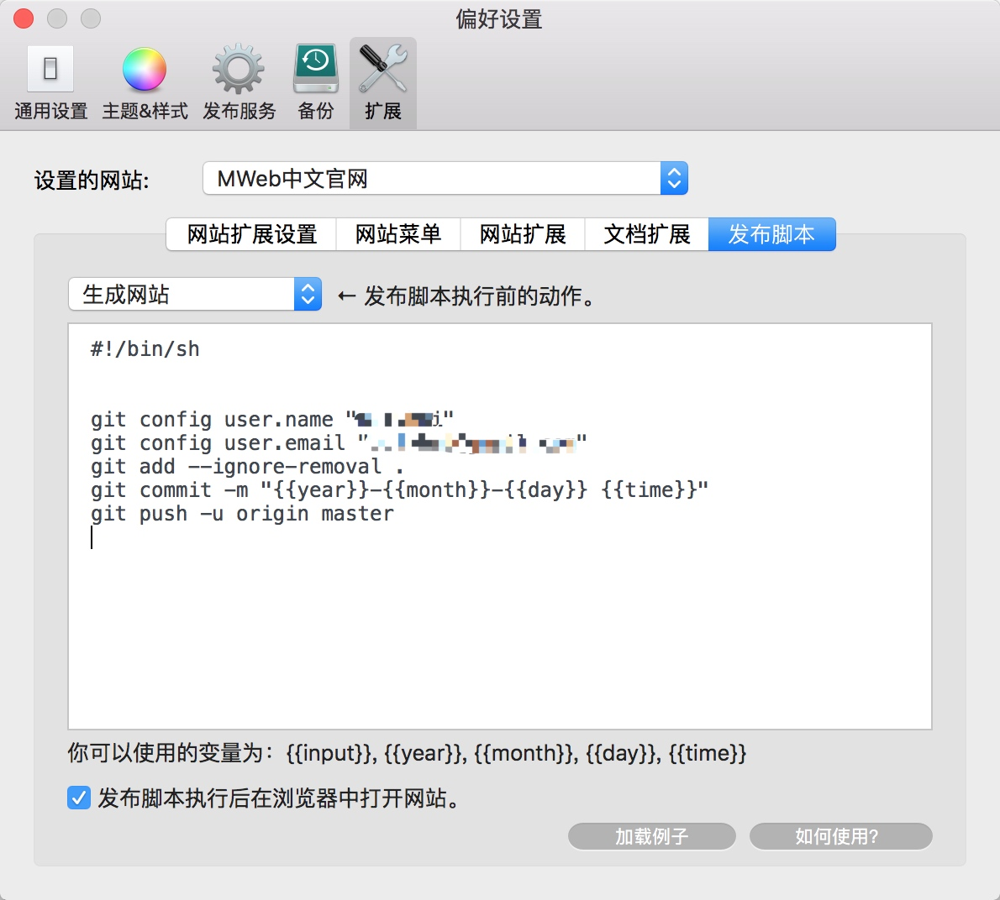
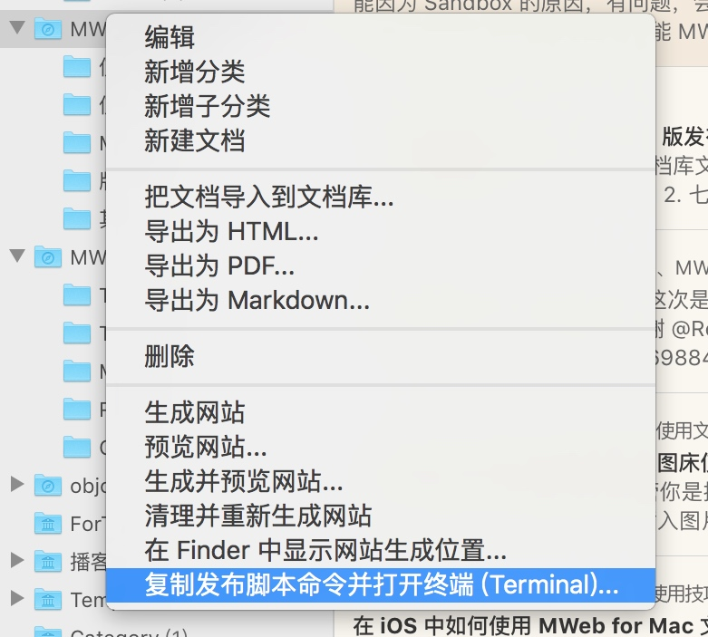

如何使用“发布脚本”功能发布静态网站
“发布脚本”这个功能 MWeb for Mac 2.2.3 版新增的，是为了让 MWeb 中的静态网站体验能达到 “新增文档并编辑” - “右键并选择执行发布脚本” 这样一个简单的流程。避免之前那样，生成网站后还要去敲命令进行发布。
1. 开始前的准备
目前发布脚本只测试过使用 git 发布，所以当前介绍的是发布到 github pages 或者其它基于 git 的 pages 服务，比如说 coding.net 或者 OSChina 的 pages。开始之前假定你已经配置好 pages 服务，如果你还没配置好，然后想用的是 github pages，请参考这里：https://pages.github.com/。
2. Clone 你的 pages 到 MWeb 静态网站生成目录中
注意：如果你之前都已经可以正常用 git 来发布静态网站了，可以跳过这一步。如果不是，请看下面的步骤：
- 用 MWeb 生成静态网站。
- 去 “MWeb 偏好设置” - “通用设置” - “生成的静态网站保存位置” 那里，点 “在 Finder 中显示” 按钮，进入 MWeb 的静态网站输出文件夹，在文件夹内应该可以看到你已生成的网站。比如说我生成的网站是 “MWeb中文官网”，就会看到一个 “MWeb中文官网” 的文件夹，文件夹内就是生成的静态网站了。下面会以 “MWeb中文官网” 做例子。
- 在命令行中进入 “MWeb 的静态网站输出文件夹”。
如果你不知道怎么做，可以在 Finder 中选择 “MWeb中文官网” 文件夹的上一级文件夹，按CMD + C复制，再打开命令行窗口，键入 cd 命令，加一个空格，再按CMD + V粘贴路径，再按Enter。。 - 删除 “MWeb中文官网” 文件夹，然后在命令行中执行：
git clone '你的 git pages 的 repo' 'MWeb中文官网'。 这里的'你的 git pages 的 repo' 'MWeb中文官网'请换成你自己的。 - 在 MWeb 中使用 “清理并重新生成” 命令，重新生成静态网站。
注意：在你 git 发布出问题的时候，也可以用上面的 3、4、5 这三个步骤进行初始化。
3. 配置发布脚本
在下图，在 “MWeb 偏好设置” - “扩展” - “发布脚本” 中配置。

我上图的是发布到 coding 的 pages，如果选择发布脚本执行前 “生成网站”，这样每次发布前都会生成网站，就能达到 “新增文档并编辑” - “右键并选择执行发布脚本” 这一简单的编辑和发布流程。实测没有问题。
如果你点击 “加载例子” 按钮，加载出来的是以下的脚本样例：
#!/bin/sh
# Please set the name and email.
# Because MWeb can't get your github global setting.
git config user.name "Your github name"
git config user.email "Your github email"
git add --ignore-removal .
git commit -m "{{year}}-{{month}}-{{day}} {{time}}"
git push -u origin master
注意：有些朋友使用的分支是 gh-pages，我这里是 master。
在中国，github 一般情况下是无法正常发布的，如果你用 github，可以使用代理，比如说我发布 “MWeb英文官网” 就是使用 Surge 的代理，全部发布脚本如下：
#!/bin/sh
export https_proxy=http://127.0.0.1:6152;export http_proxy=http://127.0.0.1:6152
git config user.name "myname"
git config user.email "myemail@gmail.com"
git add --ignore-removal .
git commit -m "{{input}} at {{year}}-{{month}}-{{day}} {{time}}"
git push -u origin master
4. 使用
使用方法非常简单，右键网站分类，选择 “复制发布脚本命令并打开终端（Terminal）...”，当终端打开后，在终端中按快捷键 Command + V 即可。如图：

5. 打开终端后自动执行发布脚本
这个方法是：https://github.com/bramblex/ 这位朋友分享的，非常感谢，这位朋友的原文如下：
mweb 现在的只能复制执行脚本命令, 并且打开终端嘛.
那么打开终端的时候会自动执行 bashrc / zshrc 文件, 那在 bashrc / zshrc 里面加入检测剪贴板并且自动发布的脚本就能实现打开终端后自动执行发布脚本了.
# 在 ~/.zshrc 或 ~/.bashrc 添下面代码, 就能实现自动执行发布脚本
# https://gist.github.com/bramblex/a6b12543a076e2c1fa5acecb95f51ead
if (pbpaste | grep -Eq '^cd "[^"]*" && sh "[^"]*/site_publish_logs/sh_\d*\.sh" && open "[^"]*"')
then
echo "========== MWEB AUTO PUBLISH START =========="
echo "Runing command:"
pbpaste
if pbpaste | sh
then
echo "Success!"
echo "Clean pasteboard..."
echo -n "" | pbcopy
echo "========== MWEB AUTO PUBLISH END =========="
echo "Close terminal 5s later..."
sleep 5
exit
else
echo "Failed!"
echo "Clean pasteboard..."
echo -n "" | pbcopy
echo "========== MWEB AUTO PUBLISH END =========="
fi
fi